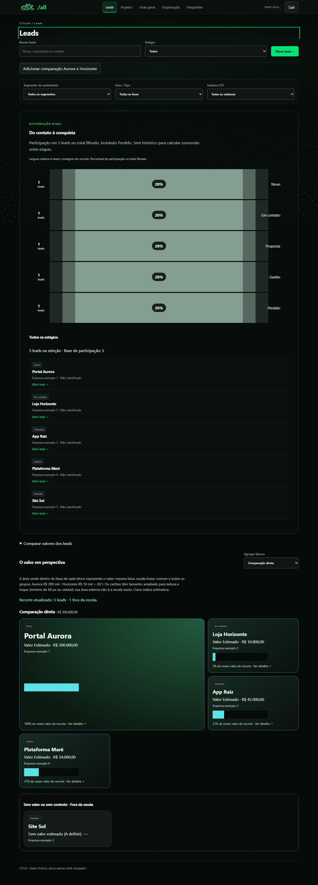
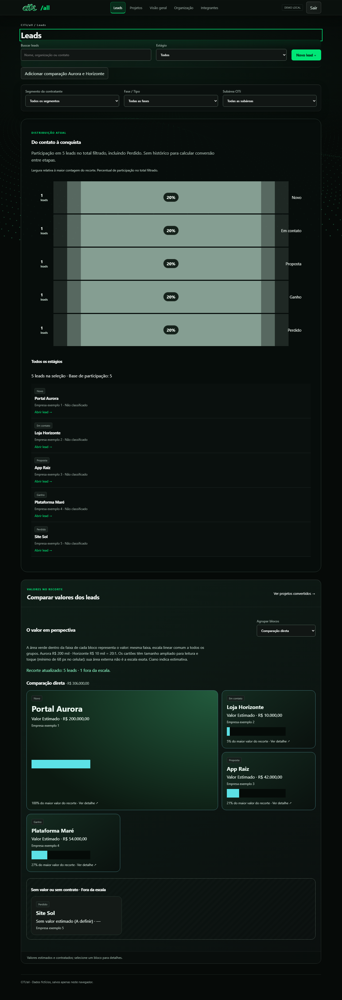
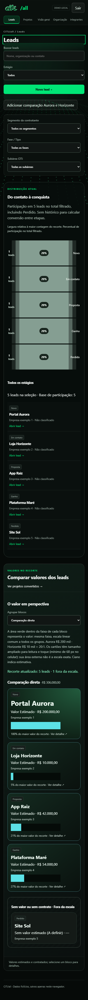
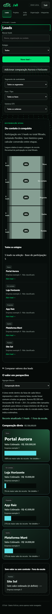
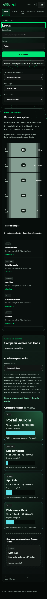

Desktop · 1280 px


Celular · 390 px

Celular · 360 px


Base b40930b, dados iniciais, filtros vazios, altura 900 px e movimento reduzido. Região inteira do funil: zero pixels diferentes em cada largura. Os módulos abaixo dele foram renovados.




